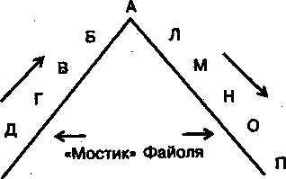
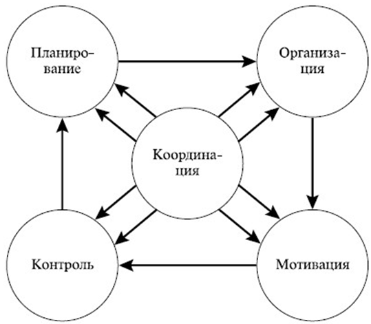

Функции менеджмента¶
Функции менеджмента — устойчивый состав видов управленческой деятельности (то, что делает на своей работе менеджер).
Мескон и Хедоури выделили четыре функции менеджмента, затем к ним добавлялись разные. Мы выделим пять.
1. Планирование¶
Планирование — определение целей деятельности, необходимых для неё средств, разработка методов достижения целей, планов (совокупность мероприятий) и программ (более крупная штука, чем план).
- Что должно входить в план, чтобы он был планом:
- название мероприятий
- сроки (обычно месяц и год, но лучше что-то конкретное)
- персонально ответственный (типичная ошибка: указывать подразделение или должность)
- (опционально) трудоёмкость
- (опционально) реализуемость
- (опционально) навыки работников
2. Организация¶
Организация — формирование структуры организации и обеспечение её необходимыми для функционирования ресурсами: материальными, финансовыми, трудовыми.
То есть менеджеру надо организаовать и людей (распределить должности и всё такое), и условия труда.
3. Мотивация¶
Мотивация — активизация работников, побуждение их к трудиться эффективнее для достижения целей компании с помощью материального и морального стимулирования, а также создание условий для развития творческого потенциала сотрудников.
4. Контроль¶
Контроль — количественная и качественная оценка, учёт результатов работы, корректировка планов и норм.
- Управленческий контроль включает в себя три этапа:
- Установление стандартов или конкретных целей.
- Измерение реальных достижений и сравнение с ожидаемыми результатами.
- Корректировка планов в случае выявления серьёзных отклонений, повышения уровня их реализуемости и достижимости.
5. Координация¶
Координация — достижение согласованности в работе всех элементов в системе управления путём установления рациональных связей между ними.
Примечание
Рассмотрим пример. У директора есть два заместителя. У них в подчинении начальники отделов. Если сотрудник отдела 1 захочет поработать с сотрудником отдела 3, он не сможет, не пройдя всю цепочку от начальника отдела до директора. Так, чтобы решить вопрос на одной горизонтали, приходится задействовать все уровни организации, что плохо: занимает много времени и теряется целостность сообщения. Чтобы избежать этого, используют, например, мостик Файоля (то есть просто разрешают разговаривать сотруднику отдела 1 с сотрудником отдела 3 напрямую).
Координация позволяет достичь баланса между другими функциями менеджмента и наладить коммуникацию на разных уровнях организации. Она, по сути, является связующим звеном между остальными функциями менеджмента.
